BORK Z6
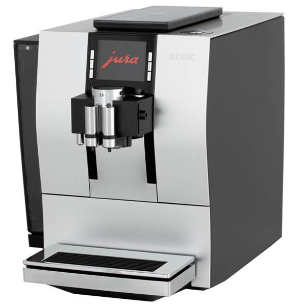Это инновационные технологии в компактном и элегантном корпусе.
Инновационная технология импульсного приготовления – Pulse Extraction Process (P.E.P.©)
Компания BORK усовершенствовала процесс приготовления ристретто и эспрессо, благодаря чему кофемашина BORK Z6 приготовит кофе дома, как в лучших кофейнях мира. Инновационная технология импульсного приготовление - Pulse Extraction Process (P.E.P.©) раскрывает самые тонкие нюансы вкуса и аромата.
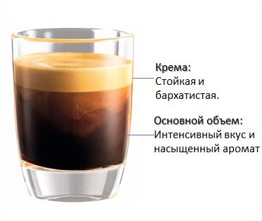В процессе приготовления ристретто или эспрессо, помпа работает с очень короткими паузами (импульсно), вода проходит через запрессованный кофе с автоматически регулируемыми интервалами, за счет этого время экстракции увеличивается, примерно на 40% в зависимости от объема.
Данная технология позволяет оптимизировать время заваривания и подвести процесс приготовления к тому как это делают бариста в лучших кофейнях мира , для более полного раскрытия вкуса и аромата.
Инновационная технология импульсного приготовления – Pulse Extraction Process (P.E.P.©)
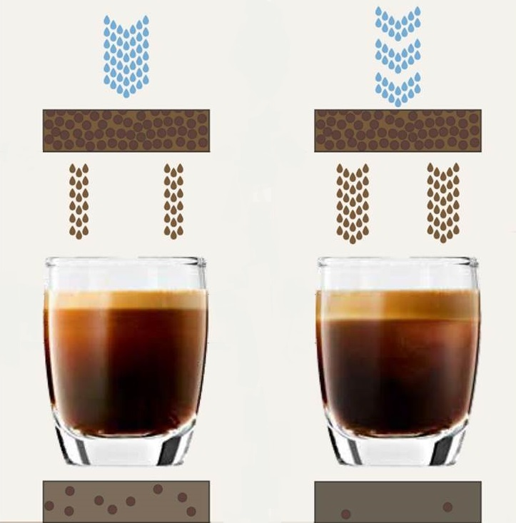Более длительное время экстракции, основанное на оптимальной частоте работы помпы и прохождению необходимого количества воды, приводит к идеальному результату.
Интеллектуальная система воды - Intelligent Water System (I.W.S.®)
BORK Z6 – первая автоматическая кофемашина с функцией автоматического обнаружения фильтра на базе RFID-технологии.
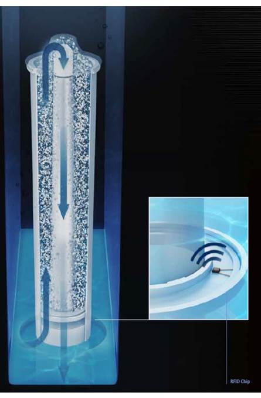- RFID (англ. Radio Frequency IDentification, радиочастотная идентификация) — способ автоматической идентификации объектов (является бесконтактной технологией), в котором посредством радиосигналов считываются или записываются данные.
- CLARIS Smart – это новый фильтр для очистки воды, со встроенным в его RFID чипом, который автоматически определяется кофемашиной.
- Система CLARIS Smart работает по принципу дозирования подачи воды, тщательно отмеряя необходимый для выбранного рецепта объем. Защищая от накипи, система отфильтровывает тяжелые металлы, включая свинец, и вещества, нарушающие запах и вкус кофе, например, хлор.
Интеллектуальная система воды - Intelligent Water System (I.W.S.®)
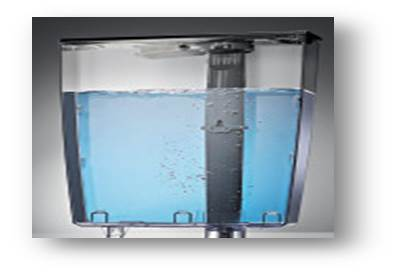- Чтобы оптимально использовать возможности фильтра, после его установки в бак для воды, кофемашина BORK Z6 автоматически анализирует присутствие CLARIS Smart, после чего информация об установке фильтра отображается на дисплее.
- После того как BORK Z6 определила наличие фильтра, кофемашина требует установить жесткость используемой воды, замерить которую необходимо с помощью тест-полоски Aquadur (идет в комплекте).
- На основании проведённых замеров качества воды и внесённых результатов в настройки, BORKZ6 будет автоматически анализировать ресурс работы CLARIS smart.
- Чем выше жёсткость воды, тем меньше срок службы картриджа и наоборот.
Интеллектуальная система воды - Intelligent Water System (I.W.S.®)
Кофемашина, оснащенная интеллектуальной системой воды IWS®, распознает когда фильтр установлен и автоматически переключается в режим “С фильтром”. В этом режиме программа “Удаление накипи” не требуется. Необходимо только менять фильтр.
Когда ресурс фильтра почти израсходован, машина предлагает пользователю заменить его. Если фильтр не заменён, то она автоматически активирует режим “Без фильтра”. В этом режиме кофемашина сама определяет необходимость очистки*, и на дисплее появляется предложение запустить программу “Удаление накипи”.
*Периодичность зависит от жёсткости воды.
Также режим “Без фильтра” активируется при извлечении фильтра из контейнера для воды.
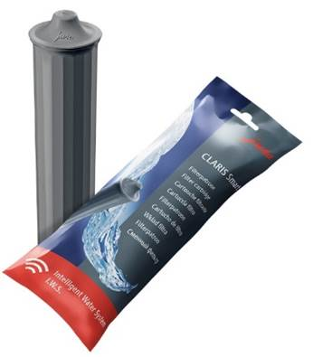 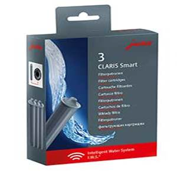- Для использования в кофемашинах с интеллектуальной системой воды (IWS®) подходит классический фильтр CLARIS Blue, но он распознаваться системой не будет, поэтому машина будет работать в режиме ”Без фильтра” (см. выше).
- Если отработанный на 100% фильтр CLARIS Smart установить повторно, то система распознает его как использованный и кофемашина автоматически переключается на режим “Без фильтра”.
- В меню настроек, в разделе состояние обслуживания, отображается информация на сколько израсходован ресурс фильтра в данный момент.
Капучинатор с автоматической системой переключения подачи с молока на молочную пену.
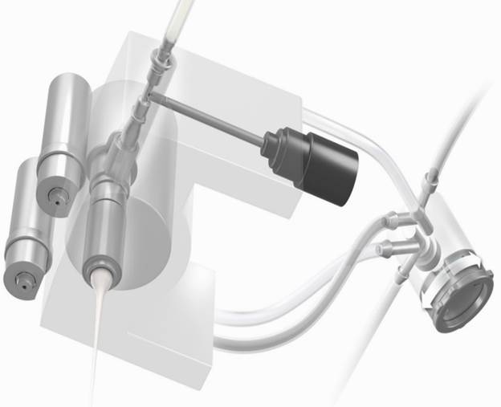- Регулирование температуры молока / молочной пены в 10 уровнях
- Многоходовой керамический клапан, автоматически меняет консистенцию с молока на молочную пену.
Кофемашина BORK Z6 переключается от подогрева молока к взбиванию пышной пены автоматически, при этом температуру напитка можно менять и программировать в соответствии с личными предпочтениями.
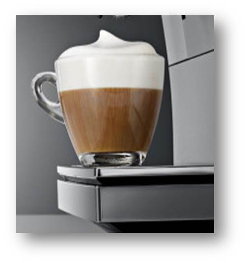Секретом фирменного кофе с пышной шапкой из молочной пены является керамический клапан в капучинаторе, автоматически регулирующий приток воздуха.
Автоматическая очистка молочной системы
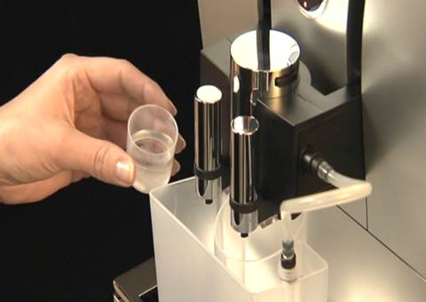Функция очистки молочной системы, которая запускается одной кнопкой.
Что нужно сделать нам
- Выбираем в меню функцию “очистка молочной системы”.
- Устанавливаем контейнер для очистки под совмещенный дозатор и подключаем к нему молочный шланг.
- При необходимости, добавляем 1 мерный колпачок чистящего средства в прямоугольное отделение контейнера.
Что делает Z6 автоматически
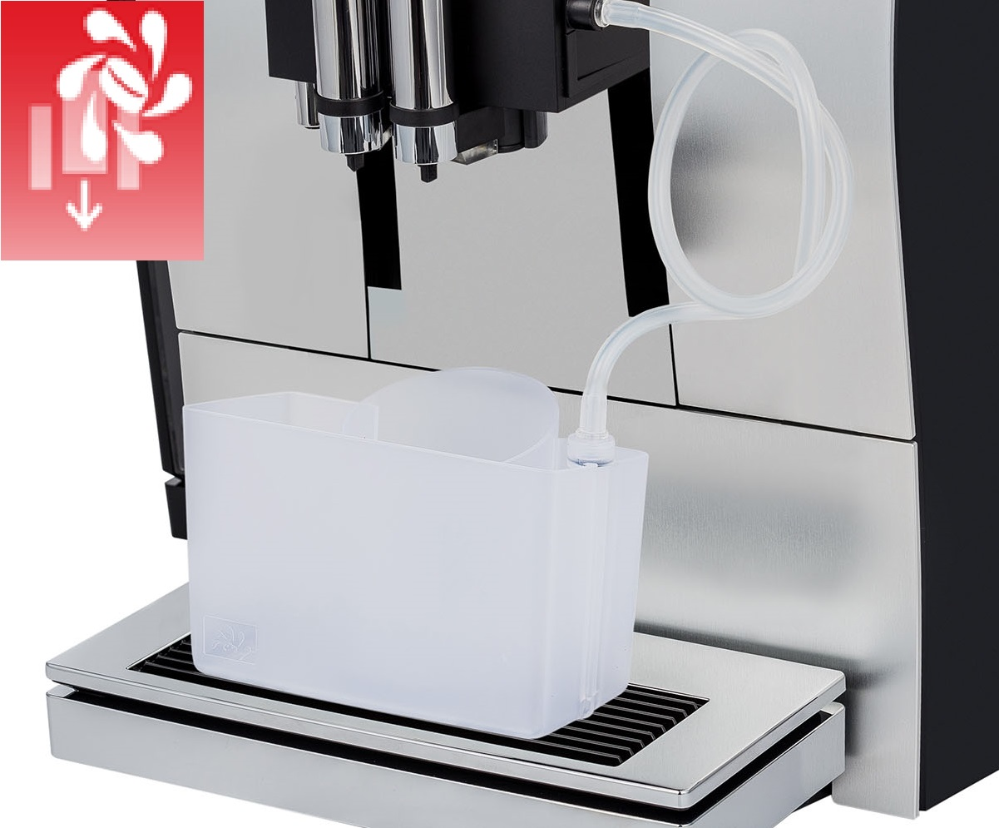- BORK Z6 автоматически подает необходимое количество теплой воды в контейнер, через дозатор подачи воды.
- После этого, через молочный шланг, вода с чистящим средством подается внутрь молочной системы для ее очистки.
- После очистки,BORK Z6 чистой горячей водой (взятой из бака для воды) ополаскивает всю молочную систему и молочный шланг.
Результат - безупречная гигиена без лишних движений всего за 2 минуты.
Кофемолка AromaG3
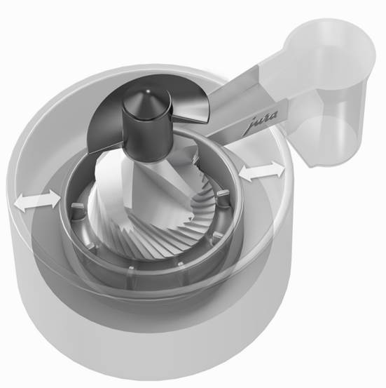- За счет изменения конструкции, увеличилась точность в равномерности и количестве помола.
- Новая конструкция жерновов, на базе кофемолки Aroma+, делает более быстрый и бережный помол.
- На 60 % меньше остатков молотого кофе в кофемолке и канале по которому он подается.
- Шестиуровневая кофемолка AromaG3 - это модернизированная кофемолка Aroma+ c изменённым углом наклона жерновов.
- Благодаря своей новой конструкции, она перемалывает кофейные зерна непосредственно перед приготовлением напитка, и обеспечивает более быстрое и бережное перемалывание, достигая идеальной тонкости помола.
- Также кофемолки AromaG3 обладают пониженным уровнем шума*. * По сравнению с Aroma+
- Модернизированный заварочный механизм. 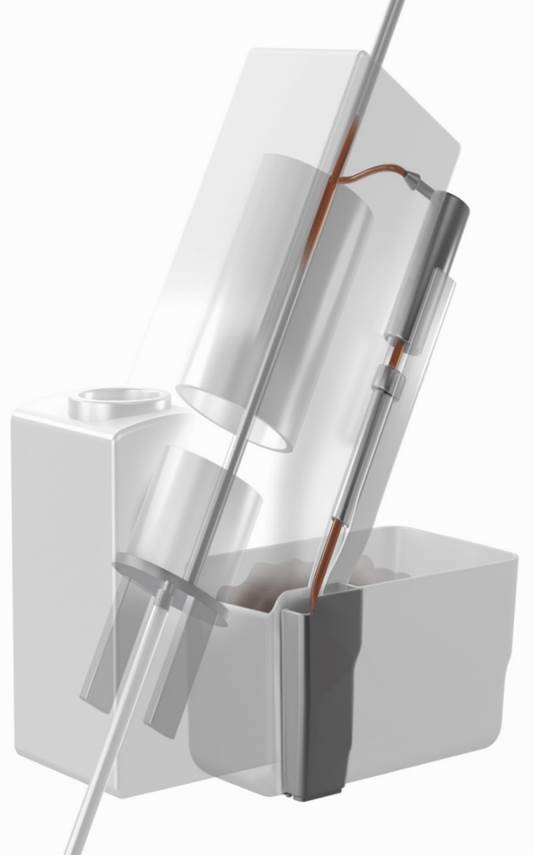
- Что бы каждый приготовленный напиток был великолепным, не зависимо с каким временным промежутком он будет готовится, JURA внесла изменения в варочный блок.
- Заваривание происходит только свежей и нагретой водой, тем самым компенсируя понижение температуры напитка, даже при приготовлении первой чашки.
- Вода, оставшаяся в системе, после каждого приготовления, автоматически отводится в поддон.
Настройки и дополнительные функции
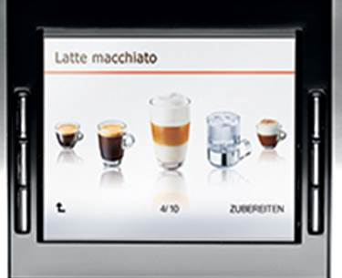Создание своих напитков и приготовление их одним нажатием.
В BORK Z6 на стартовой странице выложено 6 базовых напитков, плюс 4 напитка выложены в полосе прокрутки дополнительного меню.
У пользователя есть возможность создать еще 11 напитков с учетом личных предпочтений, и сохранять их под собственным названием, как на стартовой странице, так и в полосе прокрутки.
При этом можно перепрограммировать и переименовывать любые напитки в меню, на свое усмотрение.
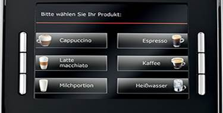Настройки и дополнительные функции
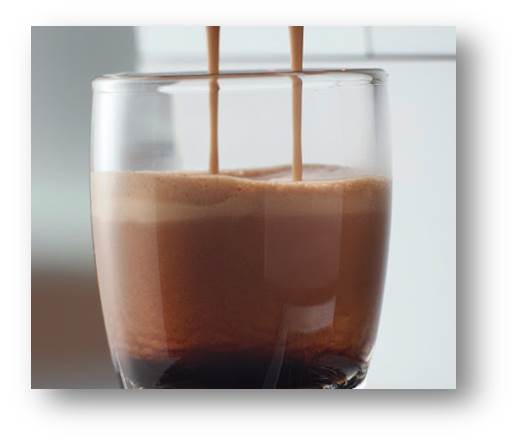- Десять уровней интенсивности (крепости), позволит пользователю настроить кофе по собственным вкусовым предпочтениям.
- Объём РИСТРЕТТО и ЭСПРЕССО регулируется от 15 до 80мл. 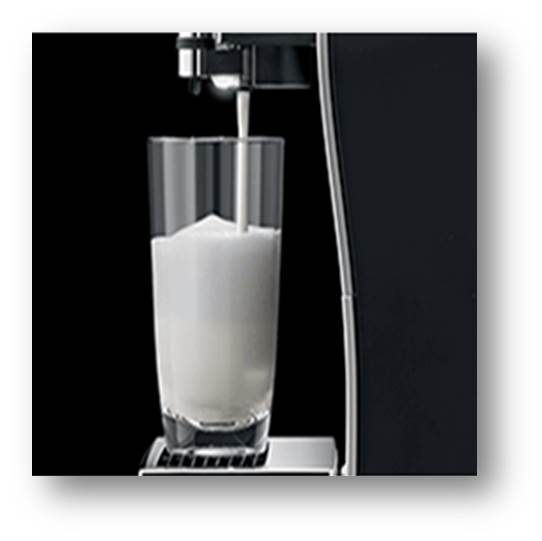
- Десять уровней температуры молока.
- Десять уровней температуры молочной пены.
- Регулировка объема подачи молока от 0 до 120 секунд.
- Регулировка объема молочной пены от 0 до 120 секунд.
ЛАТТЕ МАКИАТО
Популярный напиток с нежным вкусом и оригинальной трехслойной подачей, ни кого не оставит равнодушным.
Одним нажатием кнопки всё, что нужно:
- Шаг 4 – Подача кофе, который ложится между двумя слоями, для завершения идеального напитка.
- Шаг 3 – Перед подачей кофе, выдерживается пауза, молочная пена отслаивается от молока .
- Шаг 2 – После автоматического переключения, добавляется слой нежной молочной пены.
- Шаг 1 – Подача горячего молока, которое составляет основу латте макиато.
КАПУЧИНО
Капучино самый популярный кофейный напиток, для приготовления которого есть определенные стандарты.
Для приготовления необходимо:
- 1/3 эспрессо.
- 1/3 горячего молока.
- 1/3 молочной пены.
Приготовление:
В приготовленный кофе добавляется нагретое и вспененное молоко.
Большинство автоматических кофемашин готовят капучино не по традиционному стандарту, а по собственному.
- Сначала подается нагретое и вспененное молоко.
- Затем в него вливается кофе.
По принципу приготовления данный напиток схож с латте маккиато.
КАПУЧИНО
Уникальностью кофемашины BORK Z6 является то, что вы можете настроить приготовление Капучино по традиционному стандарту.
- Для этого в меню настоек, за основу берем напиток Флэт уайт.
- Добавляем его в стартовую страницу и переименовываем на Капучино.
- Затем задаем пропорции напитка (количество кофе, молока и молочной пены).
- Сохраняем созданные настойки.
- Теперь капучино готовится по всем правилам, нажатием всего одной кнопки.
Одним нажатием кнопки все, что нужно:
- Шаг 3 – После автоматического переключения, добавляется молочная пена, которая ложится плотной «шапкой» на поверхности .
- Шаг 2 – Происходит подача горячего молока, которое равномерно перемешивается с кофе, поднимая крема на поверхность.
- Шаг 1 – Интенсивный ароматный кофе подается в чашку.
Дополнительные особенности
В меню «Подсветка резервуара для воды» можно изменить настройку подсветки.
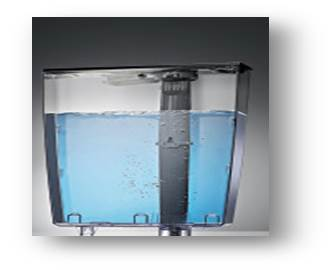- «Постоянно»: подсветка бункера для воды включена постоянно.
- «Временно»: подсветка бункера для воды включена только во время приготовления напитка.
Видоизменённое меню
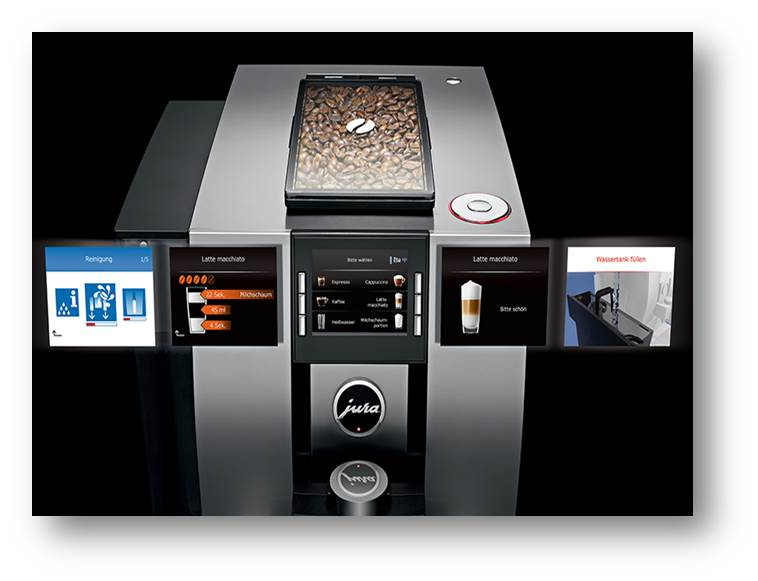- Меню стало проще и понятнее
- Индикация состояния обслуживания машины
- Встроенная электронная инструкция по уходу и обслуживанию за кофемашиной
В момент приготовления, на дисплее отображается готовящейся напиток с установленными параметрами и поочередностью подачи ингредиентов.
Технические характеристики

Характеристики
Давление: 15 бар
Мощность: 1450 Вт
Объем контейнера для воды: 2.4 л
Объем контейнера для кофейных зерен: 280 г
Объем контейнера для отработанного кофе: 20 порций
Регулируемая заварочная камера: 5-16 грамм
Тип нагревательного элемента: 1 термоблок
Цветной дисплей TFT
Возможность использовать молотый кофе
- Активный контроль наличия кофейных зерен
- Программирование крепости: 10 уровней
- Программирование температуры молока: 10 уровней
- Программирование температуры молочной пены: 10 уровней
Технические характеристики
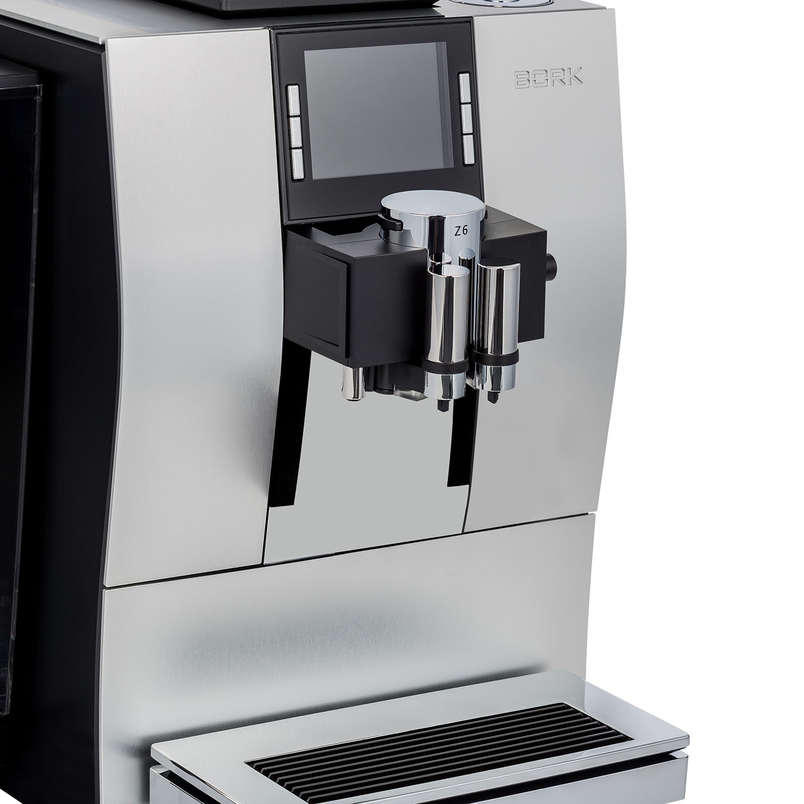- Программирование температуры подачи воды: 3 уровня
- Программирование температуры заваривания кофе: 3 уровня
- Регулируемый по высоте комбинированный дозатор (капучино/кофе): 80-153 мм
- Регулируемый по ширине дозатор кофе: 21-50 мм
- Энергосберегающий режим (E.S.M.)
- Программируемое время выключения
- Материал корпуса: алюминий/ пластик
- Длина сетевого шнура: 1.1 м
- Вес прибора: 11.5 кг
- Габариты прибора (ШхВхГ): 32x37.5x45 cм
- Цвет: серебристый
- Страна производства Швецария